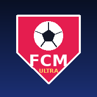
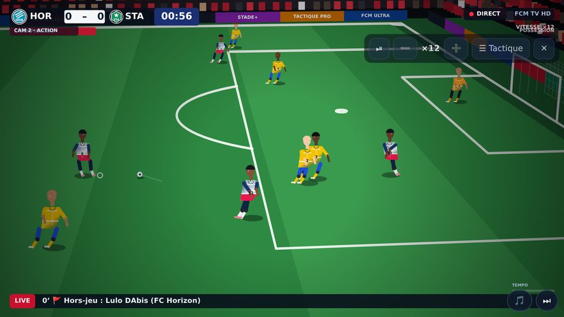
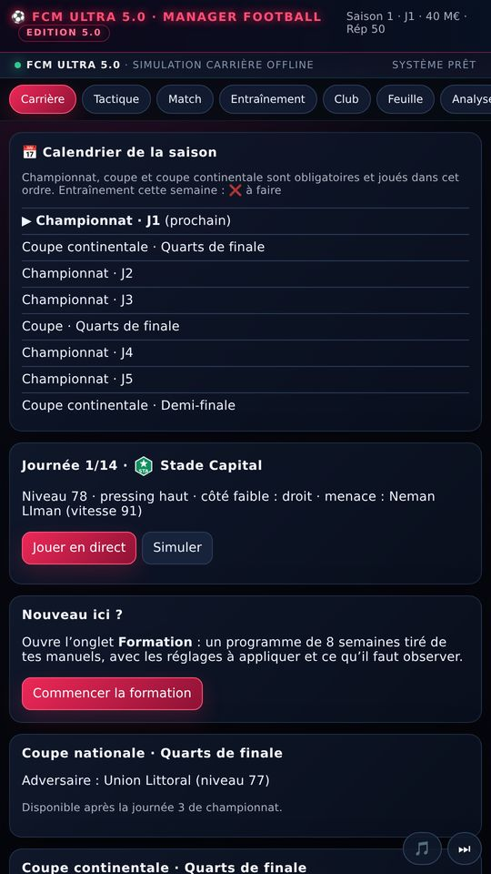
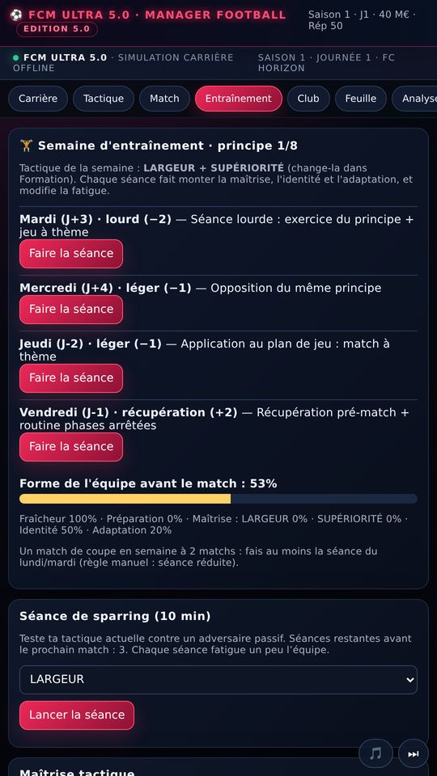
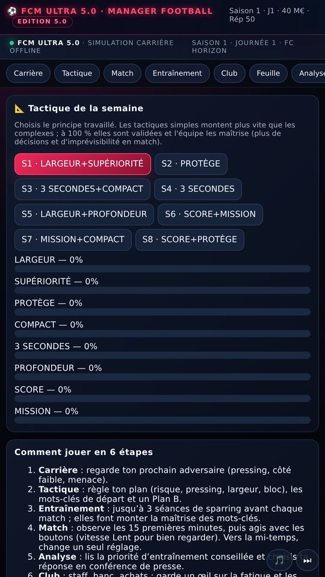

FCM Ultra
Le jeu de manager de football où tout se décide dans les détails : tactique vivante, entraînement par semaine, transferts, calendrier championnat + coupes, et match en direct avec commentaires.
▶ Jouer maintenantGoogle Playitch.ioMicrosoft Store
Ce que tu peux faire
- Choisir ton club, ta difficulté et ton budget au départ de la carrière.
- Préparer chaque semaine avec de vraies séances d’entraînement et suivre la forme de l’équipe.
- Faire monter la maîtrise de tes tactiques jusqu’à 100 % et voir tes joueurs devenir plus intelligents.
- Jouer championnat, coupe nationale et coupe continentale dans un vrai calendrier.
- Vivre le match à la TV : caméras, ralentis, commentaires parlés, cartons, penaltys et VAR.
- Négocier des transferts, recevoir des offres d’emploi, remporter des trophées et des prix individuels.
Captures d’écran




Questions fréquentes
C’est gratuit ? Oui, tu peux y jouer directement. Ton soutien aide à financer les mises à jour.
Faut-il internet ? Non, après la première ouverture le jeu fonctionne hors-ligne.
Où sont mes sauvegardes ? Sur ton appareil. Utilise « Exporter » pour les conserver.
Les clubs sont-ils réels ? Non, tout est fictif.
Confidentialité · Conditions · Contact : [e-mail]